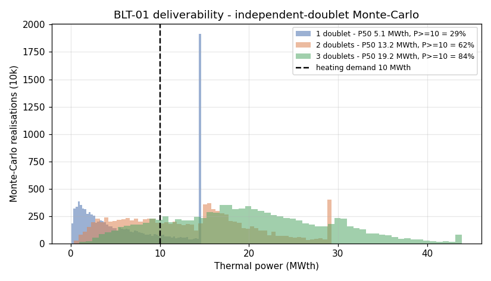
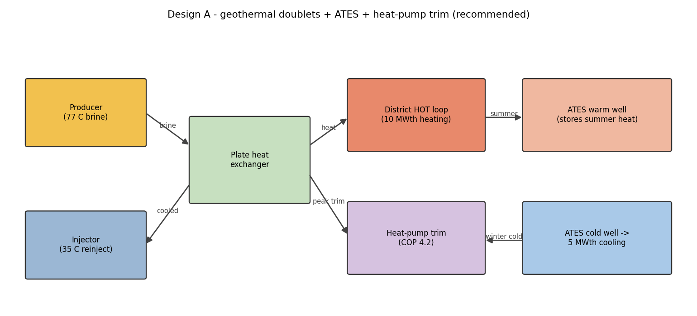
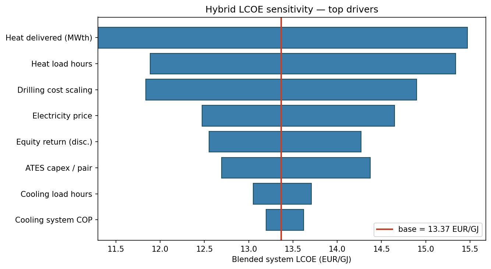

Reconciled to ThermoGIS ~1%; thermal breakthrough ~177 yr ≫ life
Independent doublets (not one draw doubled) and a physical pump cap —
no 77 °C doublet beats the ~13 MWth Dutch benchmark. Honest, not massaged.

Design A — geothermal + ATES + heat pumps

6 ATES pairs (not 4): per-pair capacity is uncertain (0.5–2 MWth),
so we size off the low end — P(supply ≥ 5 MWth) = 99.8%.
Design B — absorption-chiller contrast
LiBr/H₂O chiller driven by geothermal heat (COPth ≈ 0.7)
Needs ≈ 7.1 MWth drive heat for 5 MWth cold — heat we'd rather sell
Cooling LCOE 23.4 vs Design A 23.0 €/GJ — a wash
Wants 85–95 °C drive heat; our resource is 77 °C
Design A
Design B
Cooling LCOE
23.0
23.4
Heat for cooling
0
7.1 MWth
Total capex
€21.3M
€17.8M
Cooling elec
~1,000
~400 MWh/yr
A real contrast, not a strawman. On cost it's a tie — so A wins on the two
things that aren't close: it keeps the heat we sell, and it works at 77 °C.
Economics — extended LCOE
11.8heat €/GJ
23.0cooling €/GJ
13.4blended €/GJ
Engine validated to 5.769 €/GJ vs the TNO reference
before we trust it. As a distribution: heat LCOE P10/P50/P90 = 10.8 / 12.6 / 26.7
€/GJ — the upper tail is the cost of the resource under-delivering (→ stage the appraisal).
Fundable: SDE++ ≈ 3.8 €/GJ (~€63/tCO₂, ~13 kt CO₂/yr) → equity IRR ≈ 21 %.
~2× the Dutch heat-only benchmark — and we explain exactly why.

Bonus — AI-assisted workflow
pipeline.py — one CLI, raw LAS → hybrid LCOE, reproducible end-to-end
LightGBM missing-log prediction, validated by leave-one-well-out
Fallback rule: R² < 0.50 → ThermoGIS deterministic. We prove it, not assume it.
Does this travel? Applicability to African geothermal
The method transfers, the numbers don't. Probabilistic resource workflow,
database reconciliation, financed LCOE engine and the AI pipeline are geology-agnostic.
Not a Rift template: East African geothermal (Kenya Olkaria/Menengai, Ethiopia
Aluto/Corbetti) is high-enthalpy volcanic → power, a different model.
Where this fits: North African / intracratonic sedimentary
basins (Algeria, Tunisia, Egypt — direct-use), and the hybrid-cooling half for
cooling-dominated African cities.
Risks, assumptions, what we did not do
Thermal breakthrough quantified (Gringarten-Sauty): ~177 yr ≫ 30-yr life →
constant-MWth validated. Other risks: ATES throughput (6 pairs → 99.8%),
drilling-cost volatility; resource downside carried in the LCOE tail